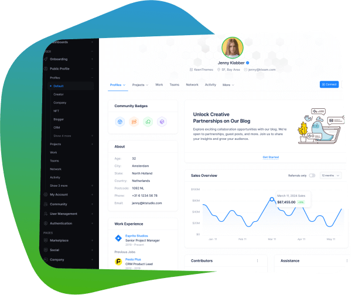
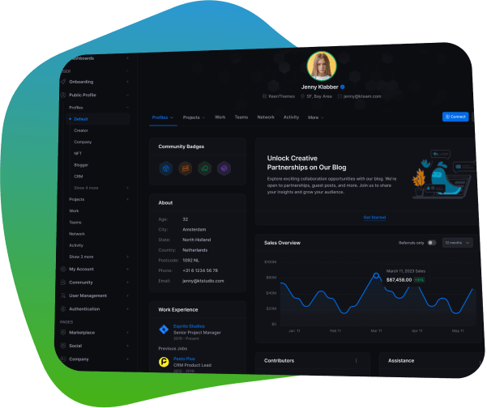

Getting Started
Metronic - Tailwind CSS Toolkit
Metronic is a comprehensive toolkit of UI components built with Tailwind CSS, enabling you to create modern, scalable web applications quickly and efficiently.
1000+
UI Elements
10
Demos
120+
Pages
50+
Components


Quick Links
Preview Demos
Metronic offers a collection of unique demos, each representing a distinct template designed for real-world applications. Every demo integrates Metronic components seamlessly, providing a comprehensive preview of how these layouts and concepts can be utilized in various scenarios.
Components
From basic elements like buttons and
forms
to advanced
components like
menus
and
datatables
, the Metronic
Tooltik has it all. Each component is designed with a focus on usability and
aesthetics, ensuring your project looks professional and functions smoothly.
Pricing
Make Metronic your trusted development companion to accelerate your
Tailwind-based projects. Choose the right license for your needs and enjoy
lifetime free updates.
Regular License
Use, by you or one client, in a single end product for which end users are not charged.
$49
Premium support
Lifetime free updates
Unlimited end users
Refund guarantee
Extended License
Use by you or your one client in a single end product for which end users can be charged.
$969
Premium support
Lifetime free updates
Unlimited paying users
Refund
guarantee
Custom License
Using Metronic for large-scale enterprise projects and need a custom license model? Contact us to obtain a tailored license that fits your business needs.
FAQ
Check out the FAQ section below to learn more about Metronic before making a purchase decision.
If you have any questions, feel free to contact our
Keenthemes Pre-sale Support
.